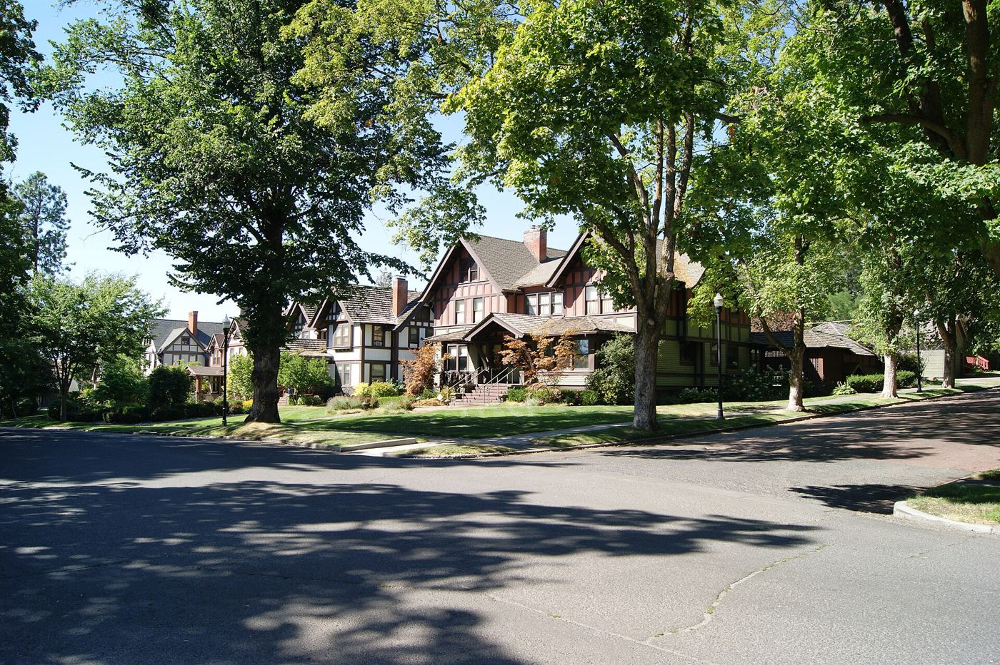

Camera inspections
We run a camera through the line from a cleanout and record the whole thing. You can watch with us, and we'll email you the video and a short written summary the same day. You'll see roots, cracks, offset joints and low spots where water sits, and how far from the house each one is.
If you're buying a house, get one before you close. A lot of older Spokane homes still have the original clay or cast iron line. The home inspection usually doesn't cover it, and a problem found before closing is a lot easier to negotiate than one found after.


Repairs
Most problems are in one spot, like a cracked joint where roots got in or a section that sagged. Those can usually be fixed by digging one hole, not trenching the whole yard. If the line really is done, we'll replace it. Where it makes sense we can also line or burst the old pipe so we don't have to dig up the driveway or the big tree in the front yard.
We'll show you the video, explain the options and give you a price for each. We'll never tell you that you need a full replacement unless the camera shows it.
Rough cost
- Camera inspection with video and summary: $225
- Spot repair of one section: $3,500 to $7,000
- Full replacement: $9,000 to $18,000+, depending on length, depth and what's on top of it
Questions we hear a lot
Who owns the sewer line, me or the city?
In most cases the homeowner owns the line from the house out to the city main. Call us with your address and we can help you sort out where your responsibility ends.
How soon can you scope a house we're buying?
Usually within two or three business days. If you're up against an inspection deadline, tell Jen when you call and she'll fit you in.
Do I need to be there?
No. We just need access to a cleanout, which your agent can usually arrange. You'll get the video by email either way.